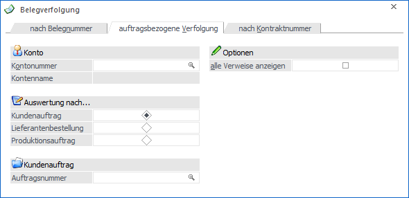
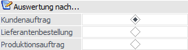
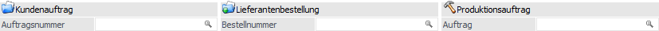
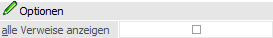

In dem Register "auftragsbezogene Verfolgung" kann die Auswertung "Auftragsverfolgung" gestartet werden. In dieser werden neben dem zu analysierenden Beleg auch alle zugehörigen Belege zu Informationszwecken aufgelistet (z.B. Lieferantenbestellungen und Produktionsaufträge zu einem Kundenauftrag).
Hinweis
Damit alle Querverweise (woher stammt der Bedarf eines Artikels oder von wo wird dieser gedeckt) optimal angezeigt werden können, sollten die Artikel (WinLine FAKT - Stammdaten - Artikelstamm - Artikel - Register "Lager" - Unterregister "Einstellungen") mit der "Produktion / Bestellung"-Einstellung "1 - Auftragsbezogene Produktion/Bestellung" oder "2 - Bestellung mit Reservierung" versehen werden.

Es stehen folgende Selektionskriterien und Einstellungen zur Verfügung, wobei die Hinterlegung in dem Bereich "Optionen" benutzerspezifisch gespeichert wird:
Konto

Ø Kontonummer
Hier kann das Kunden- bzw. Lieferantenkonto eingeben werden, dessen Belege in der Auswertung berücksichtigt werden sollen.
Ø Kontoname
An dieser Stelle wird der Name des zuvor gewählten Kontos angezeigt.
Auswertung nach…

Die Auswertung kann aus der Sicht von jeweils einer der drei folgenden Belegtypen ausgeben werden:
Ø Kundenauftrag
Die Ausgabe erfolgt auf Grundlage des Kundenauftrags, d.h. für einen bestimmten Kundenauftrag werden alle dazugehörigen Lieferantenbestellungen und Produktionsaufträge ausgewertet.
Ø Lieferantenbestellung
Die Ausgabe erfolgt auf Grundlage der Lieferantenbestellung, d.h. für eine bestimmte Lieferantenbestellung werden alle dazugehörigen Kundenaufträge und Produktionsaufträge ausgewertet.
Ø Produktionsauftrag
Die Ausgabe erfolgt auf Grundlage des Produktionsauftrags, d.h. für einen bestimmten Produktionsauftrag werden alle dazugehörigen Kundenaufträge und Lieferantenbestellungen ausgewertet.
Kundenauftrag/Lieferbestellung/Produktionsauftrag

Ø Auftragsnummer/Bestellnummer/Auftrag
Abhängig davon aus welcher Sicht die Auswertung ausgegeben werden soll, kann in diesem Feld auf einen Kundenauftrag, eine Lieferantenbestellung oder einen Produktionsauftrag selektiert werden.
Optionen

Ø alle Verweise anzeigen
Bei Aktivierung der Option "alle Verweise anzeigen" (die Einstellung wird benutzerspezifisch gespeichert), werden zusätzlich alle hinterlegten Aufträge in der Auswertung mitangezeigt.
Achtung
Die Verweisinformationen in der Auswertung stammen aus der Dispositionsinformation und deren Verknüpfungen - d.h. offene Bestellungen oder offene Produktionsaufträge können ausgewertet werden. Ist ein Halbfertigprodukt bereits produziert worden und daher auf Lager, so ist der dahinterliegende Produktionsauftrag, welcher für die Produktion des Halbfertigproduktes erstellt wurde, nicht mehr über die Verknüpfung ersichtlich. Dasselbe gilt auch für eine bereits erfüllte Bestellung für einen Produktionsauftrag. Ist die Bestellung bereits erfüllt, dann gibt es keine Verknüpfung mehr auf die Bestellung, da auch keine Disposition mehr dafür vorhanden ist.